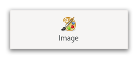

Gtk.Image¶
Example¶
- Subclasses:
None
Methods¶
- Inherited:
Gtk.Widget (181), GObject.Object (37), Gtk.Accessible (15), Gtk.Buildable (1)
- Structs:
class |
|
class |
|
class |
|
class |
|
class |
|
class |
|
class |
|
|
|
|
|
|
|
|
|
|
|
|
|
|
|
|
|
|
|
|
Virtual Methods¶
- Inherited:
Gtk.Widget (25), GObject.Object (7), Gtk.Accessible (6), Gtk.Buildable (9)
Properties¶
- Inherited:
Name |
Type |
Flags |
Short Description |
|---|---|---|---|
r/w |
|||
r/w |
|||
r/w |
|||
r/w/en |
|||
r/w |
|||
r/w/en |
|||
r/w |
|||
r |
|||
r/w/en |
Signals¶
- Inherited:
Fields¶
- Inherited:
Class Details¶
- class Gtk.Image(**kwargs)¶
- Bases:
- Abstract:
No
The
GtkImagewidget displays an image.An example
Gtk.ImageVarious kinds of object can be displayed as an image; most typically, you would load a
GdkTexturefrom a file, using the convenience function [ctor`Gtk`.Image.new_from_file], for instance:``c GtkWidget *image = gtk_image_new_from_file (“myfile.png”); ``
If the file isn’t loaded successfully, the image will contain a “broken image” icon similar to that used in many web browsers.
If you want to handle errors in loading the file yourself, for example by displaying an error message, then load the image with [ctor`Gdk`.Texture.new_from_file], then create the
GtkImagewith [ctor`Gtk`.Image.new_from_paintable].Sometimes an application will want to avoid depending on external data files, such as image files. See the documentation of
GResourceinside GIO, for details. In this case, [property`Gtk`.Image:resource], [ctor`Gtk`.Image.new_from_resource], and [method`Gtk`.Image.set_from_resource] should be used.GtkImagedisplays its image as an icon, with a size that is determined by the application. See [class`Gtk`.Picture] if you want to show an image at is actual size.- CSS nodes
GtkImagehas a single CSS node with the nameimage. The style classes.normal-iconsor.large-iconsmay appear, depending on the [property`Gtk`.Image:icon-size] property.- Accessibility
GtkImageuses theGTK_ACCESSIBLE_ROLE_IMGrole.- classmethod new()[source]¶
- Returns:
a newly created
GtkImagewidget.- Return type:
Creates a new empty
GtkImagewidget.
- classmethod new_from_file(filename)[source]¶
- Parameters:
filename (
str) – a filename- Returns:
a new
GtkImage- Return type:
Creates a new
GtkImagedisplaying the file filename.If the file isn’t found or can’t be loaded, the resulting
GtkImagewill display a “broken image” icon. This function never returnsNone, it always returns a validGtkImagewidget.If you need to detect failures to load the file, use [ctor`Gdk`.Texture.new_from_file] to load the file yourself, then create the
GtkImagefrom the texture.The storage type (see [method`Gtk`.Image.get_storage_type]) of the returned image is not defined, it will be whatever is appropriate for displaying the file.
- classmethod new_from_gicon(icon)[source]¶
- Parameters:
icon (
Gio.Icon) – an icon- Returns:
a new
GtkImagedisplaying the themed icon- Return type:
Creates a
GtkImagedisplaying an icon from the current icon theme.If the icon name isn’t known, a “broken image” icon will be displayed instead. If the current icon theme is changed, the icon will be updated appropriately.
- classmethod new_from_icon_name(icon_name)[source]¶
- Parameters:
- Returns:
a new
GtkImagedisplaying the themed icon- Return type:
Creates a
GtkImagedisplaying an icon from the current icon theme.If the icon name isn’t known, a “broken image” icon will be displayed instead. If the current icon theme is changed, the icon will be updated appropriately.
- classmethod new_from_paintable(paintable)[source]¶
- Parameters:
paintable (
Gdk.PaintableorNone) – aGdkPaintable- Returns:
a new
GtkImage- Return type:
Creates a new
GtkImagedisplaying paintable.The
GtkImagedoes not assume a reference to the paintable; you still need to unref it if you own references.GtkImagewill add its own reference rather than adopting yours.The
GtkImagewill track changes to the paintable and update its size and contents in response to it.
- classmethod new_from_pixbuf(pixbuf)[source]¶
- Parameters:
pixbuf (
GdkPixbuf.PixbuforNone) – aGdkPixbuf- Returns:
a new
GtkImage- Return type:
Creates a new
GtkImagedisplaying pixbuf.The
GtkImagedoes not assume a reference to the pixbuf; you still need to unref it if you own references.GtkImagewill add its own reference rather than adopting yours.This is a helper for [ctor`Gtk`.Image.new_from_paintable], and you can’t get back the exact pixbuf once this is called, only a texture.
Note that this function just creates an
GtkImagefrom the pixbuf. TheGtkImagecreated will not react to state changes. Should you want that, you should use [ctor`Gtk`.Image.new_from_icon_name].Deprecated since version 4.12: Use [ctor`Gtk`.Image.new_from_paintable] and [ctor`Gdk`.Texture.new_for_pixbuf] instead
- classmethod new_from_resource(resource_path)[source]¶
- Parameters:
resource_path (
str) – a resource path- Returns:
a new
GtkImage- Return type:
Creates a new
GtkImagedisplaying the resource file resource_path.If the file isn’t found or can’t be loaded, the resulting
GtkImagewill display a “broken image” icon. This function never returnsNone, it always returns a validGtkImagewidget.If you need to detect failures to load the file, use [ctor`GdkPixbuf`.Pixbuf.new_from_file] to load the file yourself, then create the
GtkImagefrom the pixbuf.The storage type (see [method`Gtk`.Image.get_storage_type]) of the returned image is not defined, it will be whatever is appropriate for displaying the file.
- get_gicon()[source]¶
-
Gets the
GIconbeing displayed by theGtkImage.The storage type of the image must be
Gtk.ImageType.EMPTYorGtk.ImageType.GICON(see [method`Gtk`.Image.get_storage_type]). The caller of this function does not own a reference to the returnedGIcon.
- get_icon_name()[source]¶
-
Gets the icon name and size being displayed by the
GtkImage.The storage type of the image must be
Gtk.ImageType.EMPTYorGtk.ImageType.ICON_NAME(see [method`Gtk`.Image.get_storage_type]). The returned string is owned by theGtkImageand should not be freed.
- get_icon_size()[source]¶
- Returns:
the image size used by icons
- Return type:
Gets the icon size used by the self when rendering icons.
- get_paintable()[source]¶
- Returns:
the displayed paintable
- Return type:
Gets the image
GdkPaintablebeing displayed by theGtkImage.The storage type of the image must be
Gtk.ImageType.EMPTYorGtk.ImageType.PAINTABLE(see [method`Gtk`.Image.get_storage_type]). The caller of this function does not own a reference to the returned paintable.
- get_pixel_size()[source]¶
- Returns:
the pixel size used for named icons.
- Return type:
Gets the pixel size used for named icons.
- get_storage_type()[source]¶
- Returns:
image representation being used
- Return type:
Gets the type of representation being used by the
GtkImageto store image data.If the
GtkImagehas no image data, the return value will beGtk.ImageType.EMPTY.
- set_from_file(filename)[source]¶
-
Sets a
GtkImageto show a file.See [ctor`Gtk`.Image.new_from_file] for details.
- set_from_gicon(icon)[source]¶
- Parameters:
icon (
Gio.Icon) – an icon
Sets a
GtkImageto show aGIcon.See [ctor`Gtk`.Image.new_from_gicon] for details.
- set_from_icon_name(icon_name)[source]¶
-
Sets a
GtkImageto show a named icon.See [ctor`Gtk`.Image.new_from_icon_name] for details.
- set_from_paintable(paintable)[source]¶
- Parameters:
paintable (
Gdk.PaintableorNone) – aGdkPaintable
Sets a
GtkImageto show aGdkPaintable.See [ctor`Gtk`.Image.new_from_paintable] for details.
- set_from_pixbuf(pixbuf)[source]¶
- Parameters:
pixbuf (
GdkPixbuf.PixbuforNone) – aGdkPixbuforNULL
Sets a
GtkImageto show aGdkPixbuf.See [ctor`Gtk`.Image.new_from_pixbuf] for details.
Note: This is a helper for [method`Gtk`.Image.set_from_paintable], and you can’t get back the exact pixbuf once this is called, only a paintable.
Deprecated since version 4.12: Use [method`Gtk`.Image.set_from_paintable] instead
- set_from_resource(resource_path)[source]¶
-
Sets a
GtkImageto show a resource.See [ctor`Gtk`.Image.new_from_resource] for details.
- set_icon_size(icon_size)[source]¶
- Parameters:
icon_size (
Gtk.IconSize) – the new icon size
Suggests an icon size to the theme for named icons.
Property Details¶
- Gtk.Image.props.file¶
-
The
GFileto display.
- Gtk.Image.props.gicon¶
-
The
GIcondisplayed in theGtk.Image.For themed icons, If the icon theme is changed, the image will be updated automatically.
- Gtk.Image.props.icon_name¶
-
The name of the icon in the icon theme.
If the icon theme is changed, the image will be updated automatically.
- Gtk.Image.props.icon_size¶
- Name:
icon-size- Type:
- Default Value:
- Flags:
The symbolic size to display icons at.
- Gtk.Image.props.paintable¶
- Name:
paintable- Type:
- Default Value:
- Flags:
The
GdkPaintableto display.
- Gtk.Image.props.pixel_size¶
- Name:
pixel-size- Type:
- Default Value:
-1- Flags:
The size in pixels to display icons at.
If set to a value != -1, this property overrides the [property`Gtk`.Image:icon-size] property for images of type
GTK_IMAGE_ICON_NAME.
- Gtk.Image.props.resource¶
-
A path to a resource file to display.
- Gtk.Image.props.storage_type¶
- Name:
storage-type- Type:
- Default Value:
- Flags:
The representation being used for image data.
- Gtk.Image.props.use_fallback¶
- Name:
use-fallback- Type:
- Default Value:
- Flags:
Whether the icon displayed in the
GtkImagewill use standard icon names fallback.The value of this property is only relevant for images of type
Gtk.ImageType.ICON_NAMEandGtk.ImageType.GICON.